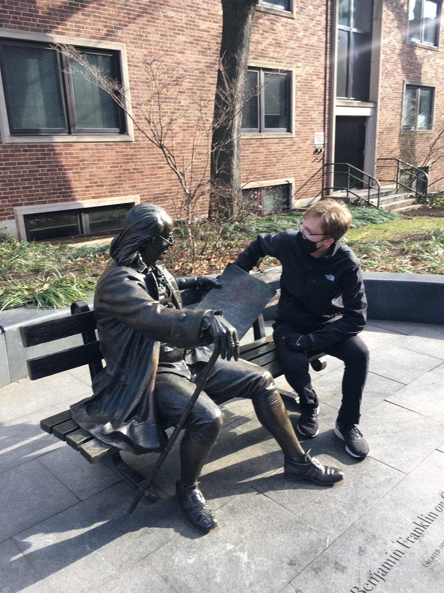
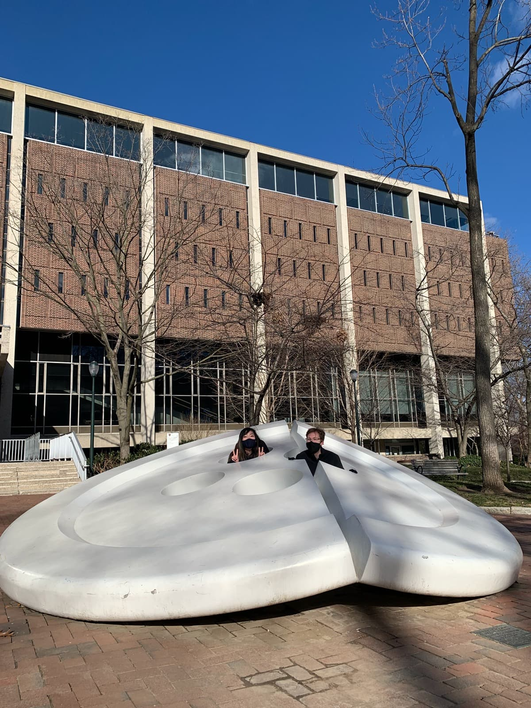

I loved the trip to Philly. We began by picking up our rental in a garage near NYU at 8:00, then swang back home to pick up donuts from the local donut shop so we can give a few to each of Ailin's friends
The first stop was Edison NJ, where we met Ailin's friend Sunitha. We stayed for an hour, drank boba tea and tried to get our fortunes told (but the fortune telling shop was closed despite the open sign on the door. There's a joke in there somewhere, but I can't think of it.)
Then, we were off the Philadelphia! The view of the skyline driving in was fantastic! We picked up a few of Ailin's things from her Ex. It was a short stop as he said he didn't want any donuts. He looked a little like Brian David Gilbert, but I discovered that her Ex's resemblance is, in fact, not the reason for Ailin's disdain for the YouTube personality. Among other things, Ailin thought the Pokerap was just fine as it is and that it didn't need to be redone.
We met up with Ailin's friend, Nancy and got a tour of Penn's campus. I saw the main sights like the statue of Ben Franklin and the large broken button!
 After a fantastic tour, we headed downtown to pick up two more of Ailin's friends, Michael and Emma, to go visit the famous "Franklin Fountain." I soon discovered that I forgot how to parallel park, so we found a parking garage. By the time we reached Franklin Fountain, I was hungry, very cold and needed to use the bathroom, so we dipped into a Philly Cheesesteak place to replenish ourselves. The cheesesteak was fine, but I was assured that this was not the best cheesesteak in Philly, so we'd need to come back later to experience that. We all got a sweet from Franklin Fountain, which may not have been a great idea on such a cold day, given Franklin Fountain is an icecream place, but it was delicious nonetheless.
With sunlight running out, we went back to Nancy's place to play Jackbox and eat Ethiopian food. It reminded me how much I enjoyed just hanging out with friends and playing games into the night. But, it couldn't last forever because we still had a two hour drive to get back to New York. We said our goodbyes, but invited everyone to come visit us in the city, and promised that we would return the Philly sometime later.